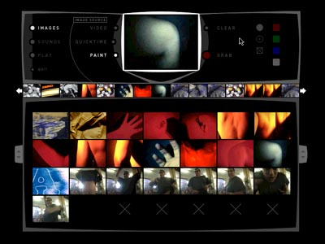

|
AudioRom 0 audio/visual sequencer Plug in your video camera, plug in your mike, import a movie, paint a picture, press play and create your own audio visual composition. This new CDROM work by AudioRom builds on their previous innovative work in bringing together sound and images all in one amazing interface. The user is able to create their own images, arrange them within a video like interface and then set of sensors to analyse the colours. these visual sensors then trigger the original sounds recorded by the user. This title shifts the authorship threshold firmly in the hands of the audience giving the user complete autonomy. This fantastic CDROM will be available within the next few weeks. 3000 copies will be distributed free of charge. Reserve your copy here. back |
 |